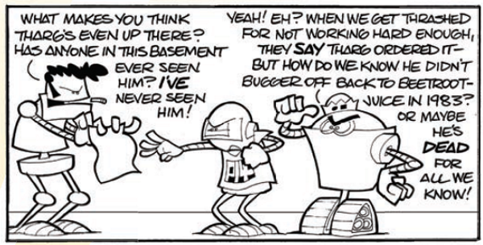

P14's job is to write the page number onto page 14 of every prog, although it later gets erased prior to printing. His friend and colleague in the Nerve Centre is Crumbs. Prepare yourself for 2000 AD-related puns-a-plenty in this cross between The Office and Verdus.
Art by Cat Sullivan
| Story Title | Parts | Pages | w indicates a wraparound coverCovers | Year(s) | Issues | Writer | Artist | Colourist | Letterer |
|---|---|---|---|---|---|---|---|---|---|
| ++2004++ | |||||||||
| P14 | 1 | 0.5 | 0 | 2004 | 1371 | Cat Sullivan | Cat Sullivan | [b&w] | Cat Sullivan |
| Crumbs | 1 | 0.5 | 0 | 2004 | 1372 | Cat Sullivan | Cat Sullivan | [b&w] | Cat Sullivan |
| The Fritz | 1 | 0.5 | 0 | 2004 | 1373 | Cat Sullivan | Cat Sullivan | [b&w] | Cat Sullivan |
| Satanus | 1 | 0.5 | 0 | 2004 | 1374 | Cat Sullivan | Cat Sullivan | [b&w] | Cat Sullivan |
| Smile | 1 | 0.5 | 0 | 2004 | 1375 | Cat Sullivan | Cat Sullivan | [b&w] | Cat Sullivan |
| Jimp | 1 | 0.5 | 0 | 2004 | 1377 | Cat Sullivan | Cat Sullivan | [b&w] | Cat Sullivan |
| Page 14 | 4 | 2 | 0 | 2004 | 1378-1379, 1381 | Cat Sullivan | Cat Sullivan | [b&w] | Cat Sullivan |
| Strike!! | 1 | 0.5 | 0 | 2004 | 1384 | Cat Sullivan | Cat Sullivan | [b&w] | Cat Sullivan |
| Future Shock | 1 | 0.5 | 0 | 2004 | 1385 | Cat Sullivan | Cat Sullivan | [b&w] | Cat Sullivan |
| 2000 A-Tea | 2 | 1 | 0 | 2004 | 1386-1387 | Cat Sullivan | Cat Sullivan | [b&w] | Cat Sullivan |
| Payroll | 1 | 0.5 | 0 | 2004 | 1388 | Cat Sullivan | Cat Sullivan | [b&w] | Cat Sullivan |
| Yur-NL1 & Cakes | 1 | 0.5 | 0 | 2004 | 1390 | Cat Sullivan | Cat Sullivan | [b&w] | Cat Sullivan |
| Slade! | 1 | 0.5 | 0 | 2004 | 1391 | Cat Sullivan | Cat Sullivan | [b&w] | Cat Sullivan |
| Lampy | 1 | 0.5 | 0 | 2004 | 1393 | Cat Sullivan | Cat Sullivan | [b&w] | Cat Sullivan |
| Dropoff | 1 | 0.5 | 0 | 2004 | 1395 | Cat Sullivan | Cat Sullivan | [b&w] | Cat Sullivan |
| Biscuit of Fear | 1 | 0.5 | 0 | 2004 | 1396 | Cat Sullivan | Cat Sullivan | [b&w] | Cat Sullivan |
| Steeped in Blood | 1 | 0.5 | 0 | 2004 | 1398 | Cat Sullivan | Cat Sullivan | [b&w] | Cat Sullivan |
| Circle of Life | 1 | 0.5 | 0 | 2004 | 1399 | Cat Sullivan | Cat Sullivan | [b&w] | Cat Sullivan |
| Jeans Day | 1 | 0.5 | 0 | 2004 | 1400 | Cat Sullivan | Cat Sullivan | [b&w] | Cat Sullivan |
| Sleeping Bags | 1 | 0.5 | 0 | 2004 | 1401 | Cat Sullivan | Cat Sullivan | [b&w] | Cat Sullivan |
| Suckup | 1 | 0.5 | 0 | 2004 | 1406 | Cat Sullivan | Cat Sullivan | [b&w] | Cat Sullivan |
| Whitehouse-o-Tron | 1 | 0.5 | 0 | 2004 | 1413 | Cat Sullivan | Cat Sullivan | [b&w] | Cat Sullivan |
| Blind Spot | 1 | 0.5 | 0 | 2004 | 1414 | Cat Sullivan | Cat Sullivan | [b&w] | Cat Sullivan |
| ++2005++ | |||||||||
| Cheryl | 1 | 0.5 | 0 | 2005 | 1420 | Cat Sullivan | Cat Sullivan | [b&w] | Cat Sullivan |
| Trooper | 1 | 0.5 | 0 | 2005 | 1422 | Cat Sullivan | Cat Sullivan | [b&w] | Cat Sullivan |
| Workplace Harassment | 1 | 0.5 | 0 | 2005 | 1423 | Cat Sullivan | Cat Sullivan | [b&w] | Cat Sullivan |
| The Classics | 1 | 0.5 | 0 | 2005 | 1424 | Cat Sullivan | Cat Sullivan | [b&w] | Cat Sullivan |
| Birthday | 1 | 0.5 | 0 | 2005 | 1426 | Cat Sullivan | Cat Sullivan | [b&w] | Cat Sullivan |
| UPC-1 | 1 | 0.5 | 0 | 2005 | 1428 | Cat Sullivan | Cat Sullivan | [b&w] | Cat Sullivan |
| Drokk! | 1 | 0.5 | 0 | 2005 | 1432 | Cat Sullivan | Cat Sullivan | [b&w] | Cat Sullivan |
| Diane | 1 | 0.5 | 0 | 2005 | 1433 | Cat Sullivan | Cat Sullivan | [b&w] | Cat Sullivan |
| Career Advancement | 1 | 0.5 | 0 | 2005 | 1435 | Cat Sullivan | Cat Sullivan | [b&w] | Cat Sullivan |
| Downlode | 1 | 0.5 | 0 | 2005 | 1437 | Cat Sullivan | Cat Sullivan | [b&w] | Cat Sullivan |
| Drinking Problem | 1 | 0.5 | 0 | 2005 | 1439 | Cat Sullivan | Cat Sullivan | [b&w] | Cat Sullivan |
| Junior | 1 | 0.5 | 0 | 2005 | 1441 | Cat Sullivan | Cat Sullivan | [b&w] | Cat Sullivan |
| Flesh | 1 | 0.5 | 0 | 2005 | 1443 | Cat Sullivan | Cat Sullivan | [b&w] | Cat Sullivan |
| Mind-Expanding Droids | 1 | 0.5 | 0 | 2005 | 1446 | Cat Sullivan | Cat Sullivan | [b&w] | Cat Sullivan |
| Chat-up | 1 | 0.5 | 0 | 2005 | 1450 | Cat Sullivan | Cat Sullivan | [b&w] | Cat Sullivan |
| Game Theory | 1 | 0.5 | 0 | 2005 | 1452 | Cat Sullivan | Cat Sullivan | [b&w] | Cat Sullivan |
| Shakara | 1 | 0.5 | 0 | 2005 | 1455 | Cat Sullivan | Cat Sullivan | [b&w] | Cat Sullivan |
| Crumbs' Game | 1 | 0.5 | 0 | 2005 | 1463 | Cat Sullivan | Cat Sullivan | [b&w] | Cat Sullivan |
| Pauline Kill | 1 | 0.5 | 0 | 2005 | 1464 | Cat Sullivan | Cat Sullivan | [b&w] | Cat Sullivan |
| Which Doctor | 1 | 0.5 | 0 | 2005 | 1466 | Cat Sullivan | Cat Sullivan | [b&w] | Cat Sullivan |
| Future Shock! | 1 | 0.5 | 0 | 2005 | 1468 | Cat Sullivan | Cat Sullivan | [b&w] | Cat Sullivan |
| ++2006++ | |||||||||
| Printing & Binding | 1 | 0.5 | 0 | 2006 | 1469 | Cat Sullivan | Cat Sullivan | [b&w] | Cat Sullivan |
| Sam-O-VR | 1 | 0.5 | 0 | 2006 | 1472 | Cat Sullivan | Cat Sullivan | [b&w] | Cat Sullivan |
| Evangelobot | 1 | 0.5 | 0 | 2006 | 1475 | Cat Sullivan | Cat Sullivan | [b&w] | Cat Sullivan |
| Typecasting | 1 | 0.5 | 0 | 2006 | 1479 | Cat Sullivan | Cat Sullivan | [b&w] | Cat Sullivan |
| Feeling Bricky | 1 | 0.5 | 0 | 2006 | 1481 | Cat Sullivan | Cat Sullivan | [b&w] | Cat Sullivan |
| Bangin' Man | 1 | 0.5 | 0 | 2006 | 1486 | Cat Sullivan | Cat Sullivan | [b&w] | Cat Sullivan |
| Beep | 1 | 0.5 | 0 | 2006 | 1490 | Cat Sullivan | Cat Sullivan | [b&w] | Cat Sullivan |
| Lobster Random Already Did This Joke | 1 | 0.5 | 0 | 2006 | 1492 | Cat Sullivan | Cat Sullivan | [b&w] | Cat Sullivan |
| Head Games | 1 | 0.5 | 0 | 2006 | 1494 | Cat Sullivan | Cat Sullivan | [b&w] | Cat Sullivan |
| Sparky's | 1 | 0.5 | 0 | 2006 | 1495 | Cat Sullivan | Cat Sullivan | [b&w] | Cat Sullivan |
| In His Service | 1 | 0.5 | 0 | 2006 | 1499 | Cat Sullivan | Cat Sullivan | [b&w] | Cat Sullivan |
| Erected 2006 | 1 | 0.5 | 0 | 2006 | 1501 | Cat Sullivan | Cat Sullivan | [b&w] | Cat Sullivan |
| Also Try New Torcocoamada | 1 | 0.5 | 0 | 2006 | 1510 | Cat Sullivan | Cat Sullivan | [b&w] | Cat Sullivan |
| Ceramic Beverage Vessel of Doom | 1 | 0.5 | 0 | 2006 | 1515 | Cat Sullivan | Cat Sullivan | [b&w] | Cat Sullivan |
| Quickie Lazy Crappy Jokey | 1 | 0.5 | 0 | 2006 | 1517 | Cat Sullivan | Cat Sullivan | [b&w] | Cat Sullivan |
| ++2007++ | |||||||||
| Hippies? Really? | 1 | 0.5 | 0 | 2007 | 1520 | Cat Sullivan | Cat Sullivan | [b&w] | Cat Sullivan |
| Blower's Job | 1 | 0.5 | 0 | 2007 | 1525 | Cat Sullivan | Cat Sullivan | [b&w] | Cat Sullivan |
| Old Man Rivet | 1 | 0.5 | 0 | 2007 | 1526 | Cat Sullivan | Cat Sullivan | [b&w] | Cat Sullivan |
| It Was Topical At The Time | 1 | 0.5 | 0 | 2007 | 1531 | Cat Sullivan | Cat Sullivan | [b&w] | Cat Sullivan |
| Jaw Rule | 1 | 0.5 | 0 | 2007 | 1536 | Cat Sullivan | Cat Sullivan | [b&w] | Cat Sullivan |
| Grind your beans'? | 1 | 0.5 | 0 | 2007 | 1537 | Cat Sullivan | Cat Sullivan | [b&w] | Cat Sullivan |
| Droids Have Parents? | 1 | 0.5 | 0 | 2007 | 1548 | Cat Sullivan | Cat Sullivan | [b&w] | Cat Sullivan |
| Romantic Attachments | 1 | 0.5 | 0 | 2007 | 1554 | Cat Sullivan | Cat Sullivan | [b&w] | Cat Sullivan |
| Supplies! | 1 | 0.5 | 0 | 2007 | 1558 | Cat Sullivan | Cat Sullivan | [b&w] | Cat Sullivan |
| The Walls Have Ears | 1 | 0.5 | 0 | 2007 | 1564 | Cat Sullivan | Cat Sullivan | [b&w] | Cat Sullivan |
| The C Stands For Cruel World | 1 | 0.5 | 0 | 2007 | 1566 | Cat Sullivan | Cat Sullivan | [b&w] | Cat Sullivan |
| a.k.a. 'The Big Heart (Gets Predictably Stomped On)' | 1 | 0.5 | 0 | 2007 | p2008 | Cat Sullivan | Cat Sullivan | [b&w] | Cat Sullivan |
| ++2008++ | |||||||||
| Gesundheil | 1 | 0.5 | 0 | 2008 | 1570 | Cat Sullivan | Cat Sullivan | [b&w] | Cat Sullivan |
| #2 Sable Brush With Fame | 1 | 0.5 | 0 | 2008 | 1577 | Cat Sullivan | Cat Sullivan | [b&w] | Cat Sullivan |
| Chain of Cackhand | 1 | 0.5 | 0 | 2008 | 1584 | Cat Sullivan | Cat Sullivan | [b&w] | Cat Sullivan |
| Shopworn | 1 | 0.5 | 0 | 2008 | 1586 | Cat Sullivan | Cat Sullivan | [b&w] | Cat Sullivan |
| From the Battle of Dunk - Urkkk | 1 | 0.5 | 0 | 2008 | 1591 | Cat Sullivan | Cat Sullivan | [b&w] | Cat Sullivan |
| Chronic Stupidity | 1 | 0.5 | 0 | 2008 | 1598 | Cat Sullivan | Cat Sullivan | [b&w] | Cat Sullivan |
| And, indeed, you could see it coming | 1 | 0.5 | 0 | 2008 | 1601 | Cat Sullivan | Cat Sullivan | [b&w] | Cat Sullivan |
| Doggie-bag, please | 1 | 0.5 | 0 | 2008 | 1604 | Cat Sullivan | Cat Sullivan | [b&w] | Cat Sullivan |
| Yes... yes it was | 1 | 0.5 | 0 | 2008 | 1611 | Cat Sullivan | Cat Sullivan | [b&w] | Cat Sullivan |
| Bloody Video Games | 1 | 0.5 | 0 | 2008 | 1615 | Cat Sullivan | Cat Sullivan | [b&w] | Cat Sullivan |
| He Screwed Off… | 1 | 0.5 | 0 | 2008 | p2009 | Cat Sullivan | Cat Sullivan | [b&w] | Cat Sullivan |
| ++2009++ | |||||||||
| Iron, Pumping | 1 | 0.5 | 0 | 2009 | 1619 | Cat Sullivan | Cat Sullivan | [b&w] | Cat Sullivan |
| With Samuel L. Jackson as Max Normal | 1 | 0.5 | 0 | 2009 | 1627 | Cat Sullivan | Cat Sullivan | [b&w] | Cat Sullivan |
| Skid Robo | 1 | 0.5 | 0 | 2009 | 1632 | Cat Sullivan | Cat Sullivan | [b&w] | Cat Sullivan |
| Also Buttermilk, Burton Mack and Benneton Manchester | 1 | 0.5 | 0 | 2009 | 1638 | Cat Sullivan | Cat Sullivan | [b&w] | Cat Sullivan |
| Please Tell Me That's A Yorkie | 1 | 0.5 | 0 | 2009 | 1643 | Cat Sullivan | Cat Sullivan | [b&w] | Cat Sullivan |
| DeathWar for the Hell-Planet Iik-Hy'aa | 1 | 0.5 | 0 | 2009 | 1649 | Cat Sullivan | Cat Sullivan | <-- [partial] | Cat Sullivan |
| A Touchup of Pink | 1 | 0.5 | 0 | 2009 | 1653 | Cat Sullivan | Cat Sullivan | [b&w] | Cat Sullivan |
| I Say I Say I Say My Droid Has No etc | 1 | 0.5 | 0 | 2009 | 1655 | Cat Sullivan | Cat Sullivan | [b&w] | Cat Sullivan |
| 80 Grit Back & Sides | 1 | 0.5 | 0 | 2009 | 1657 | Cat Sullivan | Cat Sullivan | [b&w] | Cat Sullivan |
| See also: Wulf Sternhammousse | 1 | 0.5 | 0 | 2009 | 1661 | Cat Sullivan | Cat Sullivan | [b&w] | Cat Sullivan |
| [Creepy Cec-L] | 1 | 0.5 | 0 | 2009 | 1663 | Cat Sullivan | Cat Sullivan | [b&w] | Cat Sullivan |
| Bah Homburg | 1 | 0.5 | 0 | 2009 | p2010 | Cat Sullivan | Cat Sullivan | [b&w] | Cat Sullivan |
| ++2010++ | |||||||||
| Work Experience | 1 | 0.5 | 0 | 2010 | 1666 | Cat Sullivan | Cat Sullivan | [b&w] | Cat Sullivan |
| Reset | 1 | 0.5 | 0 | 2010 | 1669 | Cat Sullivan | Cat Sullivan | [b&w] | Cat Sullivan |
| Biochip Buddies | 1 | 0.5 | 0 | 2010 | 1673 | Cat Sullivan | Cat Sullivan | [b&w] | Cat Sullivan |
| 3D | 1 | 0.5 | 0 | 2010 | 1680 | Cat Sullivan | Cat Sullivan | [b&w] | Cat Sullivan |
| Charades | 1 | 0.5 | 0 | 2010 | 1687 | Cat Sullivan | Cat Sullivan | [b&w] | Cat Sullivan |
| Icing on the Cake | 1 | 0.5 | 0 | 2010 | 1692 | Cat Sullivan | Cat Sullivan | [b&w] | Cat Sullivan |
| Armless | 1 | 0.5 | 0 | 2010 | 1697 | Cat Sullivan | Cat Sullivan | [b&w] | Cat Sullivan |
| [SS Marvin Gaye] | 1 | 0.5 | 0 | 2010 | 1700 | Cat Sullivan | Cat Sullivan | [b&w] | Cat Sullivan |
| [Hertz Donut] | 1 | 0.5 | 0 | 2010 | 1704 | Cat Sullivan | Cat Sullivan | [b&w] | Cat Sullivan |
| Faceoff | 1 | 0.5 | 0 | 2010 | 1707 | Cat Sullivan | Cat Sullivan | [b&w] | Cat Sullivan |
| Jumper | 1 | 0.5 | 0 | 2010 | 1710 | Cat Sullivan | Cat Sullivan | [b&w] | Cat Sullivan |
| Security | 1 | 0.5 | 0 | 2010 | 1713 | Cat Sullivan | Cat Sullivan | [b&w] | Cat Sullivan |
| Is Tharg Real? | 1 | 0.5 | 0 | 2010 | p2011 | Cat Sullivan | Cat Sullivan | <-- [partial] | Cat Sullivan |
| ++2011++ | |||||||||
| Mama Mia | 1 | 0.5 | 0 | 2011 | 1718 | Cat Sullivan | Cat Sullivan | [b&w] | Cat Sullivan |
| Charity Begins at Home | 1 | 0.5 | 0 | 2011 | 1723 | Cat Sullivan | Cat Sullivan | [b&w] | Cat Sullivan |
| [A Working Appliance] | 1 | 0.5 | 0 | 2011 | 1729 | Cat Sullivan | Cat Sullivan | [b&w] | Cat Sullivan |
| Engaged | 1 | 0.5 | 0 | 2011 | 1733 | Cat Sullivan | Cat Sullivan | [b&w] | Cat Sullivan |
| What Happens in Vegas | 1 | 0.5 | 0 | 2011 | 1735 | Cat Sullivan | Cat Sullivan | [b&w] | Cat Sullivan |
| Gloss Finish | 1 | 0.5 | 0 | 2011 | 1738 | Cat Sullivan | Cat Sullivan | [b&w] | Cat Sullivan |
| ABC Warriors: The Teen Years | 1 | 0.5 | 0 | 2011 | 1745 | Cat Sullivan | Cat Sullivan | [b&w] | Cat Sullivan |
| Pee-14 | 1 | 0.5 | 0 | 2011 | 1747 | Cat Sullivan | Cat Sullivan | <-- [partial] | Cat Sullivan |
| Lonely Pancreas | 1 | 0.5 | 0 | 2011 | 1752 | Cat Sullivan | Cat Sullivan | [b&w] | Cat Sullivan |
| Dead Cat | 1 | 0.5 | 0 | 2011 | 1755 | Cat Sullivan | Cat Sullivan | [b&w] | Cat Sullivan |
| Photoshop | 1 | 0.5 | 0 | 2011 | 1759 | Cat Sullivan | Cat Sullivan | <-- [partial] | Cat Sullivan |
| Christmas Excess | 1 | 0.5 | 0 | 2011 | p2012 | Cat Sullivan | Cat Sullivan | <-- [partial] | Cat Sullivan |
| ++2012++ | |||||||||
| Golden Eggs | 1 | 0.5 | 0 | 2012 | 1766 | Cat Sullivan | Cat Sullivan | [b&w] | Cat Sullivan |
| Brain Food | 1 | 0.5 | 0 | 2012 | 1772 | Cat Sullivan | Cat Sullivan | [b&w] | Cat Sullivan |
| [Weltschmerz Lost] | 1 | 0.5 | 0 | 2012 | 1781 | Cat Sullivan | Cat Sullivan | [b&w] | Cat Sullivan |
| Steampunk | 1 | 0.5 | 0 | 2012 | 1786 | Cat Sullivan | Cat Sullivan | [b&w] | Cat Sullivan |
| Upside Down | 1 | 0.5 | 0 | 2012 | 1792 | Cat Sullivan | Cat Sullivan | [b&w] | Cat Sullivan |
| Mary Poppins | 1 | 0.5 | 0 | 2012 | 1795 | Cat Sullivan | Cat Sullivan | [b&w] | Cat Sullivan |
| Self Harm | 1 | 0.5 | 0 | 2012 | 1799 | Cat Sullivan | Cat Sullivan | [b&w] | Cat Sullivan |
| Machinativity | 1 | 0.5 | 0 | 2012 | p2013 | Cat Sullivan | Cat Sullivan | [b&w] | Cat Sullivan |
| ++2013++ | |||||||||
| New Neighbours | 1 | 0.5 | 0 | 2013 | 1815 | Cat Sullivan | Cat Sullivan | [b&w] | Cat Sullivan |
| Hole Punch | 1 | 0.5 | 0 | 2013 | 1821 | Cat Sullivan | Cat Sullivan | [b&w] | Cat Sullivan |
| Itchy Butt | 1 | 0.5 | 0 | 2013 | 1826 | Cat Sullivan | Cat Sullivan | [b&w] | Cat Sullivan |
| Dirty Sofa | 1 | 0.5 | 0 | 2013 | 1830 | Cat Sullivan | Cat Sullivan | [b&w] | Cat Sullivan |
| On The Couch | 1 | 0.5 | 0 | 2013 | 1833 | Cat Sullivan | Cat Sullivan | [b&w] | Cat Sullivan |
| Next Door | 1 | 0.5 | 0 | 2013 | 1838 | Cat Sullivan | Cat Sullivan | [b&w] | Cat Sullivan |
| Upthrililng | 1 | 0.5 | 0 | 2013 | 1841 | Cat Sullivan | Cat Sullivan | [b&w] | Cat Sullivan |
| Forbidden Fruit Machine | 1 | 0.5 | 0 | 2013 | 1845 | Cat Sullivan | Cat Sullivan | [b&w] | Cat Sullivan |
| Bloody Stool | 1 | 0.5 | 0 | 2013 | 1850 | Cat Sullivan | Cat Sullivan | [b&w] | Cat Sullivan |
| Disarmed | 1 | 0.5 | 0 | 2013 | 1857 | Cat Sullivan | Cat Sullivan | [b&w] | Cat Sullivan |
| Alone this Christmas | 1 | 0.5 | 0 | 2013 | p2014 | Cat Sullivan | Cat Sullivan | <-- | Cat Sullivan |
| ++2014++ | |||||||||
| Fruitsie | 1 | 0.5 | 0 | 2014 | 1863 | Cat Sullivan | Cat Sullivan | [b&w] | Cat Sullivan |
| Fair Trade | 1 | 0.5 | 0 | 2014 | 1866 | Cat Sullivan | Cat Sullivan | [b&w] | Cat Sullivan |
| Short Fuse | 1 | 0.5 | 0 | 2014 | 1870 | Cat Sullivan | Cat Sullivan | [b&w] | Cat Sullivan |
| [Final Gift] | 1 | 0.5 | 0 | 2014 | 1873 | Cat Sullivan | Cat Sullivan | [b&w] | Cat Sullivan |
| Pizza Time | 1 | 0.5 | 0 | 2014 | 1876 | Cat Sullivan | Cat Sullivan | [b&w] | Cat Sullivan |
| Spanish Bombs | 1 | 0.5 | 0 | 2014 | 1885 | Cat Sullivan | Cat Sullivan | [b&w] | Cat Sullivan |
| Hume-O-Bot | 1 | 0.5 | 0 | 2014 | 1892 | Cat Sullivan | Cat Sullivan | [b&w] | Cat Sullivan |
| New Judge | 1 | 0.5 | 0 | 2014 | 1896 | Cat Sullivan | Cat Sullivan | [b&w] | Cat Sullivan |
| Ivy, Caesar | 1 | 0.5 | 0 | 2014 | 1905 | Cat Sullivan | Cat Sullivan | [b&w] | Cat Sullivan |
| Wheel of Life | 1 | 0.5 | 0 | 2014 | 1909 | Cat Sullivan | Cat Sullivan | [b&w] | Cat Sullivan |
| Frost-E the Snowbot | 1 | 0.5 | 0 | 2014 | p2015 | Cat Sullivan | Cat Sullivan | [b&w] | Cat Sullivan |
| ++2015++ | |||||||||
| Aqualung | 1 | 0.5 | 0 | 2015 | 1913 | Cat Sullivan | Cat Sullivan | [b&w] | Cat Sullivan |
| [Semaphore] | 1 | 0.5 | 0 | 2015 | 1918 | Cat Sullivan | Cat Sullivan | [b&w] | Cat Sullivan |
| [Nature] | 1 | 0.5 | 0 | 2015 | 1923 | Cat Sullivan | Cat Sullivan | [b&w] | Cat Sullivan |
| [Spot Took] | 1 | 0.5 | 0 | 2015 | 1930 | Cat Sullivan | Cat Sullivan | [b&w] | Cat Sullivan |
| [Cooler-Heads] | 1 | 0.5 | 0 | 2015 | 1934 | Cat Sullivan | Cat Sullivan | [b&w] | Cat Sullivan |
| [Authenticity] | 1 | 0.5 | 0 | 2015 | 1937 | Cat Sullivan | Cat Sullivan | [b&w] | Cat Sullivan |
| [Outmoded] | 1 | 0.5 | 0 | 2015 | 1941 | Cat Sullivan | Cat Sullivan | [b&w] | Cat Sullivan |
| [Redundant] | 1 | 0.5 | 0 | 2015 | 1944 | Cat Sullivan | Cat Sullivan | [b&w] | Cat Sullivan |
| [Spray It] | 1 | 0.5 | 0 | 2015 | 1948 | Cat Sullivan | Cat Sullivan | [b&w] | Cat Sullivan |
| [Knock Knock] | 1 | 0.5 | 0 | 2015 | 1952 | Cat Sullivan | Cat Sullivan | [b&w] | Cat Sullivan |
| [3] | 1 | 0.5 | 0 | 2015 | 1956 | Cat Sullivan | Cat Sullivan | [b&w] | Cat Sullivan |
| [Steep] | 1 | 0.5 | 0 | 2015 | 1961 | Cat Sullivan | Cat Sullivan | <-- | Cat Sullivan |
| ++2016++ | |||||||||
| [Sock] | 1 | 0.5 | 0 | 2016 | 1965 | Cat Sullivan | Cat Sullivan | [b&w] | Cat Sullivan |
| [R-Saul] | 1 | 0.5 | 0 | 2016 | 1969 | Cat Sullivan | Cat Sullivan | [b&w] | Cat Sullivan |
| [Mutually] | 1 | 0.5 | 0 | 2016 | 1974 | Cat Sullivan | Cat Sullivan | [b&w] | Cat Sullivan |
| [Knock Knock] | 1 | 0.5 | 0 | 2016 | 1980 | Cat Sullivan | Cat Sullivan | [b&w] | Cat Sullivan |
| [Proof] | 1 | 0.5 | 0 | 2016 | 1985 | Cat Sullivan | Cat Sullivan | [b&w] | Cat Sullivan |
| [Dishes] | 1 | 0.5 | 0 | 2016 | 1994 | Cat Sullivan | Cat Sullivan | [b&w] | Cat Sullivan |
| [ABC] | 1 | 0.5 | 0 | 2016 | 2001 | Cat Sullivan | Cat Sullivan | [b&w] | Cat Sullivan |
| [Reaching Out] | 1 | 0.5 | 0 | 2016 | 2011 | Cat Sullivan | Cat Sullivan | <-- 2 panels, [b&w] | Cat Sullivan |
| ++2017++ | |||||||||
| [Eternal Life] | 1 | 0.5 | 0 | 2017 | 2013 | Cat Sullivan | Cat Sullivan | [b&w] | Cat Sullivan |
| [Druid Life] | 1 | 0.5 | 0 | 2017 | 2020 | Cat Sullivan | Cat Sullivan | [b&w] | Cat Sullivan |
| [Dirty Things] | 1 | 0.5 | 0 | 2017 | 2024 | Cat Sullivan | Cat Sullivan | [b&w] | Cat Sullivan |
| [Rich Vein] | 1 | 0.5 | 0 | 2017 | 2029 | Cat Sullivan | Cat Sullivan | [b&w] | Cat Sullivan |
| [Who's On First?] | 1 | 0.5 | 0 | 2017 | 2037 | Cat Sullivan | Cat Sullivan | [b&w] | Cat Sullivan |
| [Radical] | 1 | 0.5 | 0 | 2017 | 2041 | Cat Sullivan | Cat Sullivan | [b&w] | Cat Sullivan |
| [Artisinal] | 1 | 0.5 | 0 | 2017 | 2046 | Cat Sullivan | Cat Sullivan | [b&w] | Cat Sullivan |
| [Made-Up Man] | 1 | 0.5 | 0 | 2017 | 2052 | Cat Sullivan | Cat Sullivan | [b&w] | Cat Sullivan |
| [Unguent?] | 1 | 0.5 | 0 | 2017 | 2056 | Cat Sullivan | Cat Sullivan | [b&w] | Cat Sullivan |
| [A Christmas Carol] | 1 | 0.5 | 0 | 2017 | 2061 | Cat Sullivan | Cat Sullivan | <-- 3 panels, [b&w] | Cat Sullivan |
| ++2018++ | |||||||||
| [Butter] | 1 | 0.5 | 0 | 2018 | 2067 | Cat Sullivan | Cat Sullivan | [b&w] | Cat Sullivan |
| [Breadsie] | 1 | 0.5 | 0 | 2018 | 2075 | Cat Sullivan | Cat Sullivan | [b&w] | Cat Sullivan |
| [Transplant] | 1 | 0.5 | 0 | 2018 | 2080 | Cat Sullivan | Cat Sullivan | [b&w] | Cat Sullivan |
| [Grizzly Paradox] | 1 | 0.5 | 0 | 2018 | 2084 | Cat Sullivan | Cat Sullivan | [b&w] | Cat Sullivan |
| [Thrill-Stack] | 1 | 0.5 | 0 | 2018 | 2088 | Cat Sullivan | Cat Sullivan | [b&w] | Cat Sullivan |
| [The Bet] | 1 | 0.5 | 0 | 2018 | 2091 | Cat Sullivan | Cat Sullivan | [b&w] | Cat Sullivan |
| [Super-Skive] | 1 | 0.5 | 0 | 2018 | 2094 | Cat Sullivan | Cat Sullivan | [b&w] | Cat Sullivan |
| [Greys] | 1 | 0.5 | 0 | 2018 | 2099 | Cat Sullivan | Cat Sullivan | [b&w] | Cat Sullivan |
| [Nobody Nose] | 1 | 0.5 | 0 | 2018 | 2104 | Cat Sullivan | Cat Sullivan | [b&w] | Cat Sullivan |
| [Spare Change] | 1 | 0.5 | 0 | 2018 | 2107 | Cat Sullivan | Cat Sullivan | [b&w] | Cat Sullivan |
| [Your Eyes] | 1 | 0.5 | 0 | 2018 | 2111 | Cat Sullivan | Cat Sullivan | <-- [partial] | Cat Sullivan |
| ++2019++ | |||||||||
| [Fillip] | 1 | 0.5 | 0 | 2019 | 2113 | Cat Sullivan | Cat Sullivan | [b&w] | Cat Sullivan |
| [Crumbs!] | 1 | 0.5 | 0 | 2019 | 2115 | Cat Sullivan | Cat Sullivan | [b&w] | Cat Sullivan |
| [Skipstopholes] | 1 | 0.5 | 0 | 2019 | 2121 | Cat Sullivan | Cat Sullivan | [b&w] | Cat Sullivan |
| [Economy] | 1 | 0.5 | 0 | 2019 | 2124 | Cat Sullivan | Cat Sullivan | [b&w] | Cat Sullivan |
| [October] | 1 | 0.5 | 0 | 2019 | 2128 | Cat Sullivan | Cat Sullivan | [b&w] | Cat Sullivan |
| [Fiends] | 1 | 0.5 | 0 | 2019 | 2131 | Cat Sullivan | Cat Sullivan | [b&w] | Cat Sullivan |
| [Cannae] | 1 | 0.5 | 0 | 2019 | 2134 | Cat Sullivan | Cat Sullivan | [b&w] | Cat Sullivan |
| [Twazzock] | 1 | 0.5 | 0 | 2019 | 2140 | Cat Sullivan | Cat Sullivan | [b&w] | Cat Sullivan |
| [Thrill-Quota] | 1 | 0.5 | 0 | 2019 | 2144 | Cat Sullivan | Cat Sullivan | [b&w] | Cat Sullivan |
| [Hoojie Paloojie] | 1 | 0.5 | 0 | 2019 | 2151 | Cat Sullivan | Cat Sullivan | [b&w] | Cat Sullivan |
| [Nanobot] | 1 | 0.5 | 0 | 2019 | 2159 | Cat Sullivan | Cat Sullivan | [b&w] | Cat Sullivan |
| [Monkey Baker] | 1 | 0.5 | 0 | 2019 | 2162 | Cat Sullivan | Cat Sullivan | <-- 2 panels, [b&w] | Cat Sullivan |
| ++2020++ | |||||||||
| [Stay Positive] | 1 | 0.5 | 0 | 2020 | 2163 | Cat Sullivan | Cat Sullivan | [b&w] | Cat Sullivan |
| [Anus Horribilis] | 1 | 0.5 | 0 | 2020 | 2167 | Cat Sullivan | Cat Sullivan | [b&w] | Cat Sullivan |
| [Nonobot] | 1 | 0.5 | 0 | 2020 | 2172 | Cat Sullivan | Cat Sullivan | [b&w] | Cat Sullivan |
| [Objective Critique] | 1 | 0.5 | 0 | 2020 | 2184 | Cat Sullivan | Cat Sullivan | [b&w] | Cat Sullivan |
| [Bloody Literal] | 1 | 0.5 | 0 | 2020 | 2186 | Cat Sullivan | Cat Sullivan | [b&w] | Cat Sullivan |
| [Running Joke] | 1 | 0.5 | 0 | 2020 | 2189 | Cat Sullivan | Cat Sullivan | [b&w] | Cat Sullivan |
| [Bad Cuppa] | 1 | 0.5 | 0 | 2020 | 2198 | Cat Sullivan | Cat Sullivan | [b&w] | Cat Sullivan |
| [Spare Change?] | 1 | 0.5 | 0 | 2020 | 2208 | Cat Sullivan | Cat Sullivan | [b&w] | Cat Sullivan |
| [Goodbye 2020] | 1 | 0.5 | 0 | 2020 | 2212 | Cat Sullivan | Cat Sullivan | [b&w] | Cat Sullivan |
| ++2021++ | |||||||||
| [Face Trucking Co.] | 1 | 0.5 | 0 | 2021 | 2215 | Cat Sullivan | Cat Sullivan | [b&w] | Cat Sullivan |
| [Feel It Kick] | 1 | 0.5 | 0 | 2021 | 2221 | Cat Sullivan | Cat Sullivan | [b&w] | Cat Sullivan |
| [Fleshy Stink] | 1 | 0.5 | 0 | 2021 | 2227 | Cat Sullivan | Cat Sullivan | [b&w] | Cat Sullivan |
| [Reorg Trooper] | 1 | 0.5 | 0 | 2021 | 2230 | Cat Sullivan | Cat Sullivan | [b&w] | Cat Sullivan |
| [Fingerless Gloves] | 1 | 0.5 | 0 | 2021 | 2236 | Cat Sullivan | Cat Sullivan | [b&w] | Cat Sullivan |
| [Quantum Weekend] | 1 | 0.5 | 0 | 2021 | 2240 | Cat Sullivan | Cat Sullivan | [b&w] | Cat Sullivan |
| [Psychic] | 1 | 0.5 | 0 | 2021 | 2247 | Cat Sullivan | Cat Sullivan | [b&w] | Cat Sullivan |
| [Accessories] | 1 | 0.5 | 0 | 2021 | 2252 | Cat Sullivan | Cat Sullivan | [b&w] | Cat Sullivan |
| Hook Jaw! | 1 | 0.5 | 0 | 2021 | 2257 | Cat Sullivan | Cat Sullivan | [spot color] | Cat Sullivan |
| [Frugality] | 1 | 0.5 | 0 | 2021 | 2262 | Cat Sullivan | Cat Sullivan | [b&w] | Cat Sullivan |
| ++2022++ | |||||||||
| [High Stakes] | 1 | 0.5 | 0 | 2022 | 2264 | Cat Sullivan | Cat Sullivan | [b&w] | Cat Sullivan |
| [Routine Test] | 1 | 0.5 | 0 | 2022 | 2272 | Cat Sullivan | Cat Sullivan | [b&w] | Cat Sullivan |
| [Forbidden Fruit] | 1 | 0.5 | 0 | 2022 | 2276 | Cat Sullivan | Cat Sullivan | <-- [partial] | Cat Sullivan |
| [Wheels] | 1 | 0.5 | 0 | 2022 | 2282 | Cat Sullivan | Cat Sullivan | [b&w] | Cat Sullivan |
| [Cyclic] | 1 | 0.5 | 0 | 2022 | 2286 | Cat Sullivan | Cat Sullivan | [b&w] | Cat Sullivan |
| [Kecks] | 1 | 0.5 | 0 | 2022 | 2291 | Cat Sullivan | Cat Sullivan | <-- [partial] | Cat Sullivan |
| >> Features << | |||||||||
From InterrogationCat Sullivan: This Droid's Life | 1 | 2 | 0 | 2008 | M273 | Matthew Badham | reprints / promo shots | <-- | n/a |
| year | episodes | pages |
| 2002 | 0 | 0 |
| 2003 | 0 | 0 |
| 2004 | 27 | 13.5 |
| 2005 | 21 | 10.5 |
| 2006 | 15 | 7.5 |
| 2007 | 12 | 6 |
| 2008 | 11 | 5.5 |
| 2009 | 12 | 6 |
| 2010 | 13 | 6.5 |
| 2011 | 12 | 6 |
| 2012 | 8 | 4 |
| 2013 | 11 | 5.5 |
| 2014 | 11 | 5.5 |
| 2015 | 12 | 6 |
| 2016 | 8 | 4 |
| 2017 | 10 | 5 |
| 2018 | 11 | 5.5 |
| 2019 | 12 | 6 |
| 2020 | 9 | 4.5 |
| 2021 | 10 | 5 |
| 2022 | 6 | 3 |
Comic strip data (excludes other content):